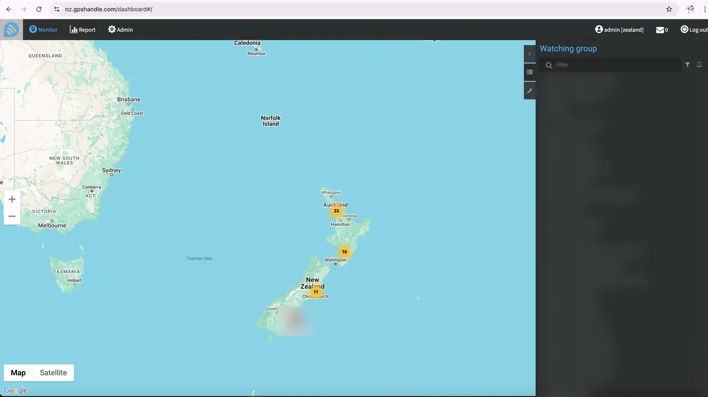
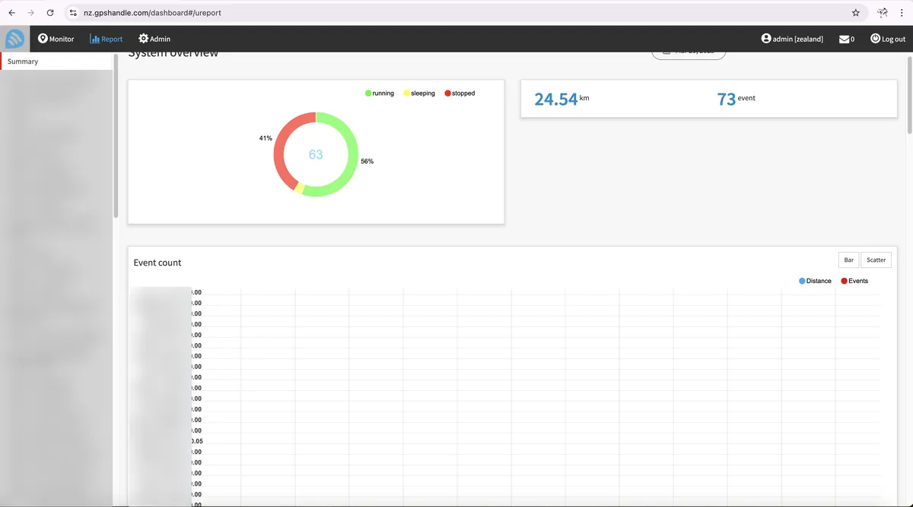
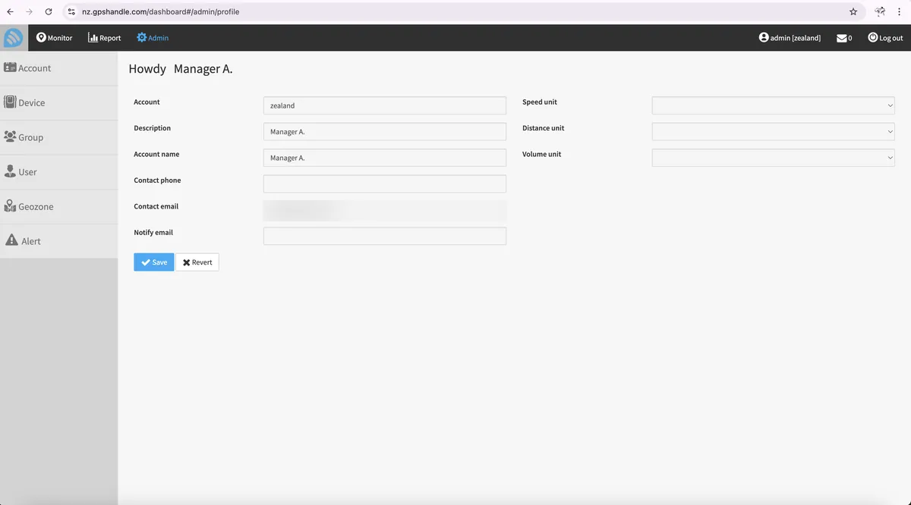

X51 Simple Trade
Personal financial data platform · Apr 2021 – Present
A financial data analysis platform focused on market data, financial news and investment analytics.
- Data ingestion and processing workflows for financial information from multiple sources.
- AI agents that process financial news, market trends and social sentiment.
- Proprietary trading-score and financial-analysis features, plus a Flutter mobile app.
GPSHANDLE
GPS tracking & fleet management system
Real-time tracking platform with geofencing, alerts, driver-behaviour scoring, fuel analysis, maintenance scheduling and reporting — backend, web dashboard and mobile apps designed from the ground up.


